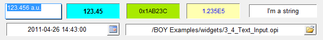

Text Input
Text Input is used to write value to a PV and display the readback PV value.
It does not supports multi-line text. It supports
parsing String as a Double or Long Integer array.

Operations
Double clicking (or clicking twice) on it will make its text editable.
Pressing Enter or clicking other place of the display to finish editing.
Pressing Esc to abort editing.
Special Properties
Besides its own special properties, the widget has all the
special properties of TextUpdate.
- Minimum (minimum).
- The lower range of the allowed input if PV is numeric type.
- Maximum (maximum).
- The upper range of the allowed input if PV is numeric type.
- Limits From PV (limits_from_pv).
- Load the allowed Minimum and Maximum from PV.
- Selector Type (selector_type).
- The type of the selector. Supports File
selector and Datetime selector.
Properties only visible to File selector:
- File Source (file_source).
- The source of the file.It can be workspace file or
a file from local file system.
- File Return Part (file_return_part).
- Which part of the path should be returned.
It could be full path, file name and extension or file name only.
Properties only visible to Datetime selector:
- Datetime Format (datetime_format).
- The format of the datetime.
It is an arbitrary combination of
yyyy (year), MM (month),
dd (day),
HH (hour), mm (minute) and ss (seconds).
For example,
yyyy-MM-dd HH:mm:ss would look like 2011-04-26 14:43:00
MM/dd/yyyy HH:mm:ss would look like 04/26/2011 15:04:00
MM/dd/yyyy would look like 04/26/2011.
See Also